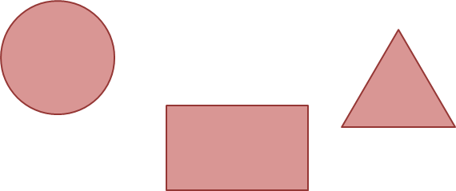
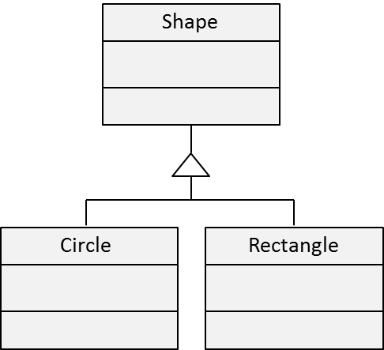

Nous allons construire un modèle objet simple de gestion de formes géométriques.
Le diagramme de classes souhaité est le suivant.
Les ressources disponibles pour ce projet :
La classe Circle doit pouvoir éxécuter le code suivant et produire le bon résultat.
L'unique paramètre du constructeur est le rayon du cercle.
La classe Circle doit avoir une méthode area() qui retourne la surface du cercle.
document.getElementById("result1").innerHTML = new Circle(2).area();
résultat=
La classe Rectangle possède la même méthode que Circle.
Les paramètres du constructeur sont largeur et hauteur.
document.getElementById("result2").innerHTML = (new Rectangle(2, 3).area() == 6);
résultat=
La classe Rectangle et Circle ont des propriétés et des méthodes en commun.
Nous aimerions pouvoir positionner nos formes en implémentant la méthode setPosition(x, y) qu'une seule fois.
Nous allons donc créer la classe Shape dont héritent Circle et Rectangle.
Nous devons donc pouvoir écrire :
new Shape().setPosition(10, 10); new Circle(10).setPosition(10, 10);
Il existe plusieurs façons de mettre en oeuvre de l'hérirage si on cherche "javascript inheritance" sous google.
2 tutoriaux possibles : OOP in JS, Part 2 : Inheritance et JavaScript Inheritance – How And Why
Le code suivant doit donc fonctionner avec de l'héritage.
circle = new Circle(10);
circle.setPosition(10, 20);
document.getElementById("result3").innerHTML = (circle.x == 10);
résultat=
En pratique, des frameworks comme jquery ou prototype permettent de simplifier la création d'arborescence de classes.
Un canvas est élément html définissant une zone graphique rectangulaire dans laquelle il est possible de dessiner en 2d et 3d.
Le dessin dans le canvas se fait en javascript en récupérant un contexte graphique.
var canvas = document.getElementById('canvas');
var context = canvas.getContext('2d');
Nous pouvons donc ajouter une méthode paint à nos classes et déssiner des formes dans le canvas.
var canvas = document.getElementById('canvas1');
var context = canvas.getContext('2d');
context.fillStyle = "white";
rectangle = new Rectangle(100, 50);
rectangle.setPosition(450, 100);
rectangle.paint(context);
circle = new Circle(50);
circle.setPosition(300, 125);
circle.paint(context);
Une boucle d'animation est simple à mettre en place.
if (!document._circle) { // initialise la forme et l'attache au document
circle = new Circle(25);
circle.setPosition(300, 125);
document._circle = circle;
}
function animate() { // boucle d'animation
var canvas = document.getElementById('canvas2');
var context = canvas.getContext('2d');
context.fillStyle = "white";
context.clearRect(0, 0, 840, 300); // efface tout le contenu
updateState(document._circle); // déplace le cercle (à implémenter)
circle.paint(context); // dessine le cercle
}
if (document._timer) { // démarre ou arrête le timer
clearInterval(document._timer);
document._timer = null;
} else {
document._timer = setInterval(animate,50); // appelle animate toutes les 500 ms
}
Un tutorial plus complet pour ce genre d'animation avec un jeu de balle
Le canvas est capable de faire de la 3d :
Et beaucoup d'autres sur canvas demo
Les versions récentes de Firefox, Safari, Chrome et Opera supportent les canvas.
Internet Explorer supportera les canvas dans sa version 9.